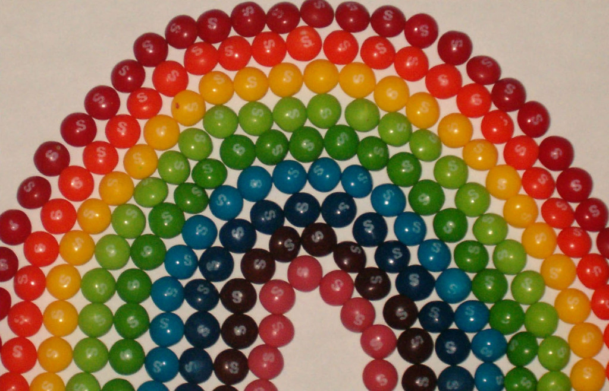
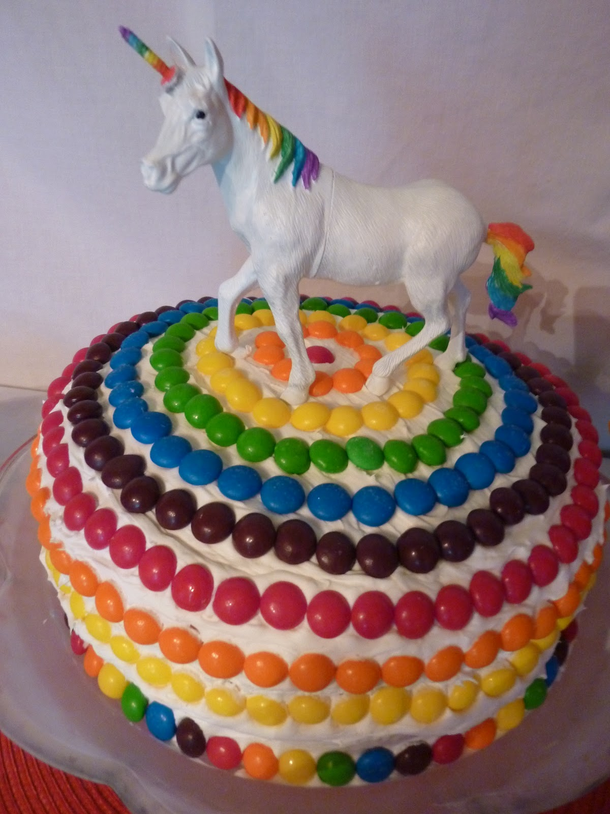
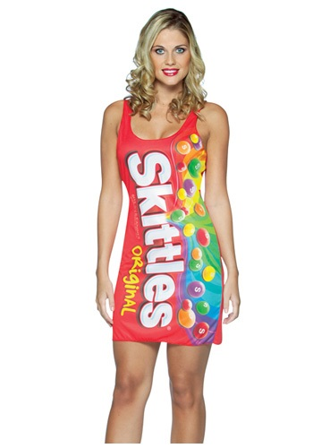

DOESN'T EVERYBODY LOVE SKITTLES? I LOOOOOOVE SKITTLES. LET TALK AND SHARE OUR LOVE FOR THIS SPECIAL RAINBOW WE CAN TASTE
Look at all these glorious Skittles!
Here are some things you can do with Skittles
This is a cake with a Unicorn on top, because Unicorns and Skittles taste great together
This is a dress made out of the Skittles logo because Rainbows make you look like a big bag of fun
margin: 20px
auto or something similar)
padding and line-height until you're happy
with the general typography of your document.
list-style-type: none and padding: 0 on
the ul element inside the nav element.
display: inline-block on
the li elements inside the nav
element. Note that you can't just write a rule for all
li's, or the numbered list of tasks will get messed up.
display: block on the a
elements inside the nav. Give them a different background
color, and some padding. Perhaps try a little bit of side
margin if you want to seperate them a bit from each other,
or maybe a border or some rounded corners.
hover pseudo-class to make the nav elements react to
the mouse cursor passing over them. Your choice as to how they react. A couple
of ideas: change color, change border, change background color, etc.
li elements from each other a bit,
using top and/or bottom margins.
<code> elements look better! Your choice as to how.